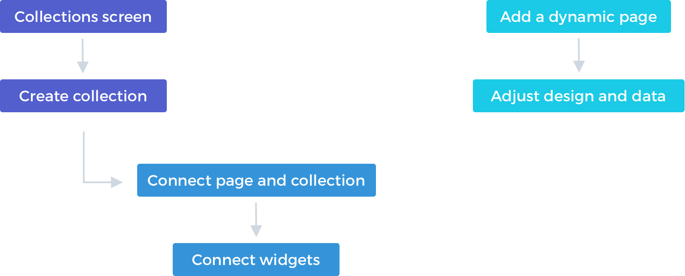

Duda is a web building platform for design agencies and hosting companies. After Dynamic Pages with external collections was released, a lot of users didn't want to store their data in external platforms. They were looking for a place/database to store their data instead of having to manage it someplace else. Some users didn’t want to have to leave the platform to manage their data.
My role in this project was both product manager and product designer. Our team included a backend developer, fullstack and client, as well as QA and automation.
Our target audience was customers who build advanced and page-heavy sites, but want to manage them as part of the site itself, without having to leave the editor. These are usually customers who are less tech savvy and want to allow their clients to update and manage their data. They are looking for a one stop solution, instead of having to add external integrations to their sites. The target audience in this project was broader. It’s good for any user who’s looking This is relevant to more users as it's simple and doesn't require extra integrations. This is good for any user who needs to manage their data and display it on the site, specifically structured data. Site that have a need for dynamic pages.
- Simplify the complex external collection - Make Dynamic pages more accessible to customers - Create a familiar collections experience
Built-in collection interface inside Duda's editor, used to display data on the site using Connected Data or Dynamic Pages. Allow creating a database within the site, and display its content on the site. Internal collections allows users to be more organised - they know each site has its own database, and they don't have to remember which sheet is connected to which website of which client. They can use more capabilities with internal collections and it looks familiar to the rest of the editor, meaning less advanced users would be able to use it. It allows us to better integrate this within the product. Users do not need to leave the platform to manage their data.
Competitor research - since the problem here was obvious, after a year of working on this subject, my research focused on usability and how can we make the process as smooth as possible, and stay close to the solutions we already provided for other collections. This time I focused on airtable, google sheets, glide and other platforms that allow editing data in a form of table.
I went back to interviews from dynamic pages and looked for the key components that will make people use this over other platforms or collections. A lot of people described what the perfect process for them will be, what they loved about other products and what were the key features that will make them build their next internal collection on Duda.
Comparison to external collections.
With the internal collections we had a technical benefit that could improve the flow tremendously. We still had the longer flow, similar to dynamic pages with external collections. but now we could introduce an easier to discover and easier to manage flow.
#1 - Add new page popup
#2 - Add Dynamic Page - Team Member
Start from scratch
Start from template
Flexible table-like interface that allows the user to add a field of their choice, name it and set formatting (if possible for this field type).
When right-clicking the table rows and fields, we displayed a variety of actions. The initial release included basic actions such as edit and delete, and gradually we added more actions.
To create a convenient way to edit data in the table, we added an option to expand the table to full screen. That way users can focus on editing and managing their data, viewing all the data at the same time.
To allow users to keep their data clean, we added a data formatting options for several field types. This way users can select how they want to display their data. For example: - Phone formatting can be separated with hyphens or spaces. - Date fields have many possible format options. - Number field can be used for a price or precentage. - Location format varies according to areas.
Edit row is a popup that displays the content of a row. It can be opened when hovering each row or when right-clicking it. This allows users to edit their data in a friendlier interface as well as navigating between the different rows. This edit row popup can be opened from the dynamic page view, giving the user the ability to edit the connected data/the collection data from within the page where it is displayed.
Hover on a row will display the Edit Row icon
Clicking it will open the Edit Row popup
In Dynamic Mode, the Edit Row icon is in the top bar
Clicking it will open the Edit Row popup within the Dynamic Page
This feature was released within 4 months.

We had a closed beta release for 30 users. These were users that expressed interset in having a collection that is built in inside the editor. The beta included a feedback section, where users could send our team immediate feedback. After two weeks we sent out a survey with specific questions to understand what was the general review, and see if we need to improve anything before the release. We addressed two issues that repeated themselves in the feedback we got from users and made sure to fix them before releasing it to general availability. (video hint, make the text field expandable). Edit row beta We had a closed beta in the end we sent a survey.
Internal collection became one of our most popular features with a retention rate of 65%.
Thanks for reading. You can go back to the top ↑ or off to the next project →